4b: Preemptive Multitasking
Objectives
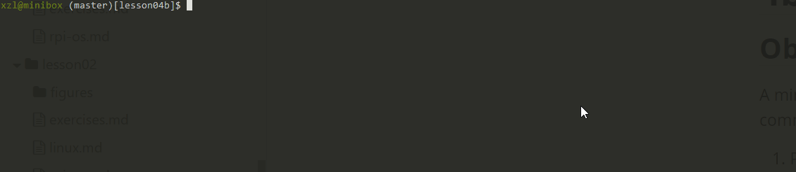
A minimum kernel that can schedule multiple tasks in a preemptive fashion. With this experiment, our tiny kernel is more like a "real-time kernel" commonly seen in embedded systems, e.g. FreeRTOS.
- Preempt tasks with time interrupts
- Understand context switch driven by interrupts, in particular switch to/from interrupt handlers
- Atomic kernel regions where preemption is disallowed
Source code location: p1-kernel/src/exp4b
Roadmap
We will turn on timer interrupts. In the interrupt handler, our kernel invokes its scheduler to switch among runnable tasks.
In addition to switch_to, the kernel should save & restore CPU state upon entering/existing interrupt handling.
Turn on timer interrupts!
We turn on timer interrupts in kernel_main.
void kernel_main(void) {
uart_init();
init_printf(0, putc);
irq_vector_init();
timer_init(); /* new addition */
enable_interrupt_controller(); /* new addition */
enable_irq(); /* new addition */
...
}
With that, tasks no longer need to call schedule() voluntarily.
void process(char *array)
{
while (1){
for (int i = 0; i < 5; i++){
uart_send(array[i]);
delay(100000);
}
// schedule();
}
}
Calling schedule() in timer tick
With preemptive scheduling, schedule() are called in two places.
- A task can call
schedulevoluntarily (as in cooperative scheduling). - On a regular basis from the timer interrupt handler.
Look at timer_tick(), which is called from the timer interrupt.
void timer_tick()
{
--current->counter;
if (current->counter>0 || current->preempt_count >0) {
return;
}
current->counter=0;
enable_irq();
_schedule();
disable_irq();
...
First of all, it decreases current task's counter. If the counter is greater than 0 or preemption is currently disabled the function returns. Otherwiseschedule is called with interrupts enabled. (Note: we just came from an interrupt handler and CPU just automatically disabled all interrupts.)
Why interrupts must be enabled in the scheduler? More on this later.
How scheduling works with interrupt entry/exit?
With preemptive scheduling, the kernel must save & restore CPU contexts for the task being interrupted. This is because, e.g. a task A may be interrupted at any point and get preempted (i.e. "losing CPU"). Later, when the kernel reschedules A, A should resume from where it was interrupted.
Refresh your memory: in previous baremetal experiments with no multitasking, we have seen how kernel_entry and kernel_exit macros save and restore general-purpose CPU regs upon switch to/from an interrupt/exception handler. There, we rely on that the hardware automatically saves exception return address and CPU status in registers, elr_el1 register and spsr_el register. When eret is executed, CPU restores execution from these registers.
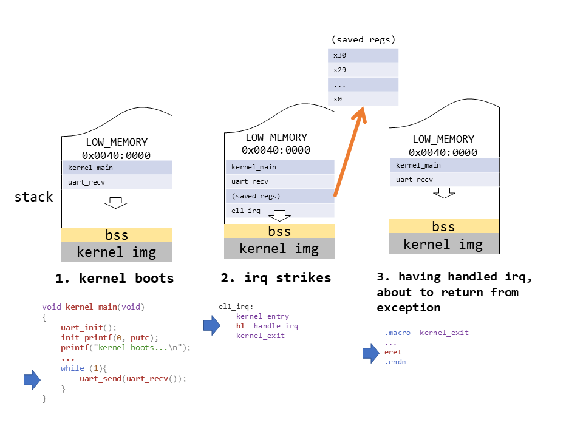
Figure above: in previous experiments w/o multitasking, save/restore registers upon entering/leaving irq handlers.
With multitasking, the kernel now has to create per-task copies of CPU context in memory: ALL general-purpose registers plus elr_el1 and spsr_el.
Where to store the CPU context?
We choose to store the CPU context on the current task's stack (NOT in its task_struct.cpu_context). There are alternative designs to be examined later.
An example workflow
Kernel boots
kernel_main function is executed. The initial stack is configured to start at LOW_MEMORY, which is at 0x0040:0000 (4 MB).
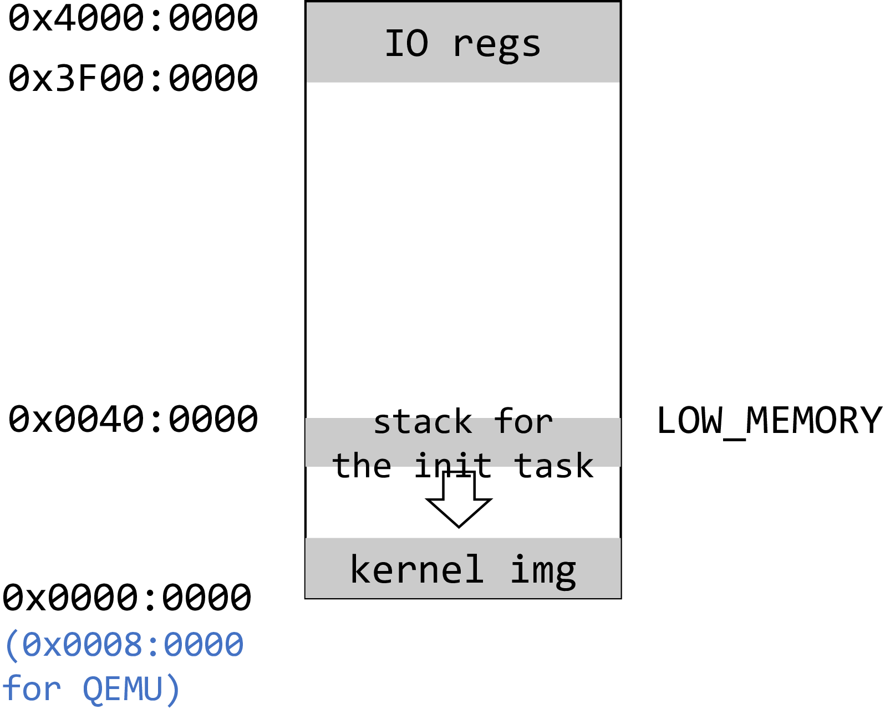
Task 1 creation
kernel_main calls copy_process for the first time. A new 4 KB page is allocated, and task_struct is placed at the bottom of this page.
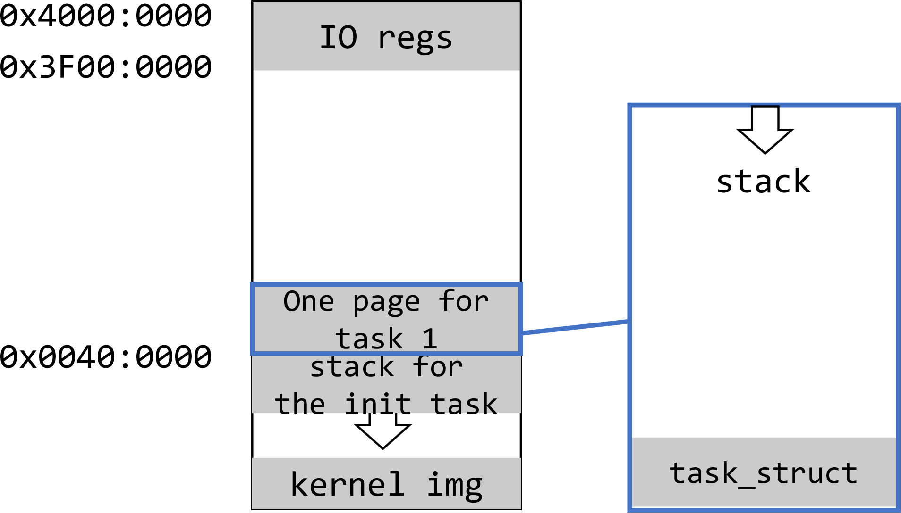
Task 2 creation
kernel_main calls copy_process for the second time and the same process repeats. Task 2 is created and added to the task list.
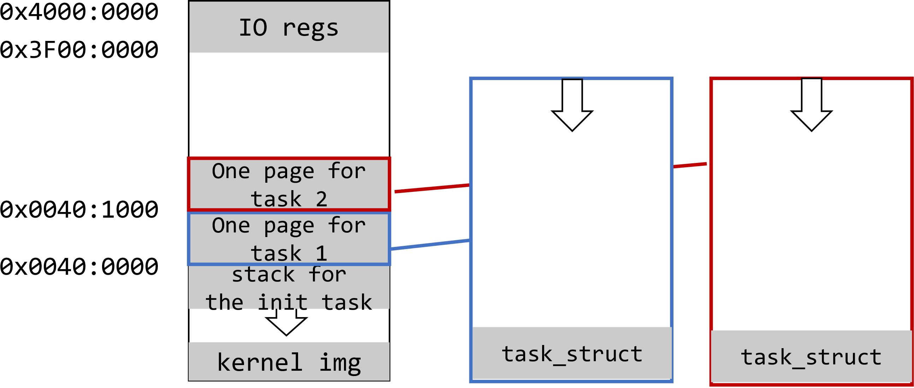
Switching to task 1; task 1 runs
kernel_main calls the schedule function and it decides to switch to task 1.
cpu_switch_tosaves callee-saved registers in the init taskcpu_context, which is located inside the kernel image.cpu_switch_torestores callee-saved registers from task 1'stask_struct. At this point,cpu_context.sppoints to0x00401000, lr points to ret_from_fork function,x19contains a pointer to the start of process() andx20a pointer to string "12345", which is located somewhere in the kernel image.cpu_switch_toexecutesret, which jumps to theret_from_forkfunction.ret_from_forkreadsx19andx20registers and callsprocessfunction with the argument "12345".- After
processfunction starts, the stack of task 1 begins to grow.
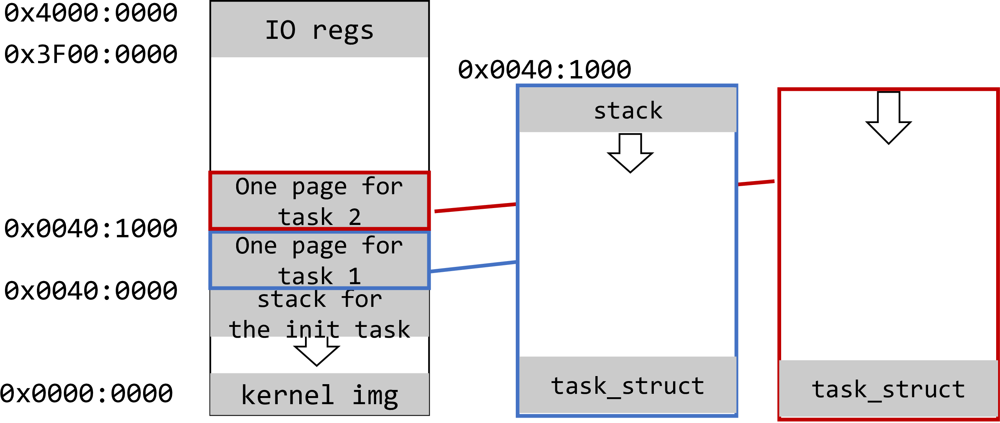
While task 1 runs, a timer interrupt occurred
kernel_entrysaves all general purpose registers &elr_el1andspsr_el1to the bottom of task 1 stack ("saved regs" in the figure below).- The kernel now executes in the irq context. It continues to grow the current stack which belongs to task 1. The growth is below the "saved regs" region and is marked as "irq frame" on the figure (i.e. the stack frame created by the execution in the irq context).
- The kernel proceeds to
scheduleand picks task 2.
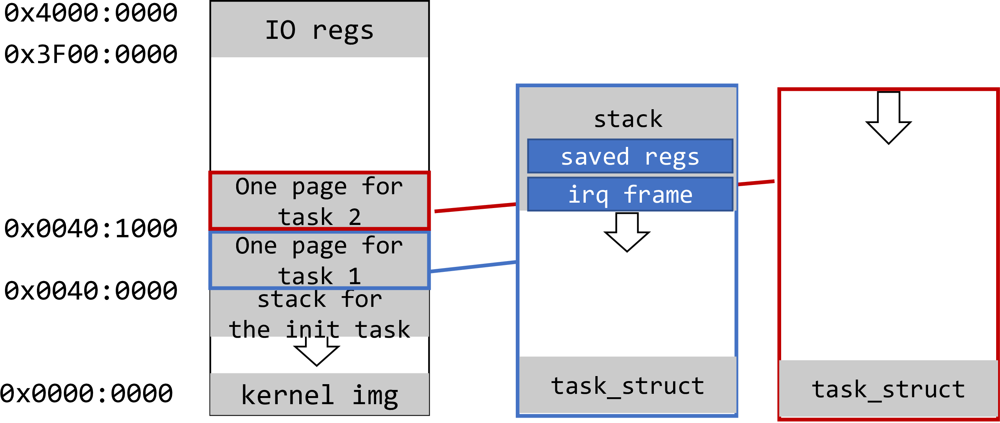
Switching to task 2; task 2 runs
cpu_switch_to executes exactly the same sequence of steps that it does for task 1. Task 2 started to execute and it stack grows.
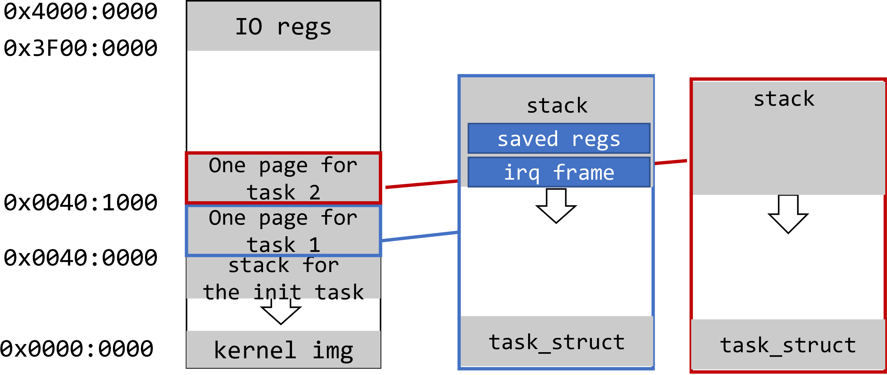
Note: until now, the kernel has NOT executed eret for the previous timer irq. This is fine as an intentional choice made for this experiment.
How can we execute task 2 in the context of the previous irq? This is allowed because ARM64 CPU does not differentiate execution in an irq context vs. in an exception (i.e. syscall) context. All the CPU knows is the current EL (we always stay at EL1 before/after the irq) and the irq enable status. And irqs have been enabled previously in timer_tick before schedule was called.
Nevertheless, there's a more common design in which the kernel finishes the previous irq handling (i.e. 'eret') before switching to a new task. See "alternative design" below.
Another timer interrupt occurred while task 2 is running
Same as above, kernel_entry saves all general purpose registers + elr_el1 and spsr_el1 at the bottom of task 2's stack. Task 2's irq frame begins to grow.
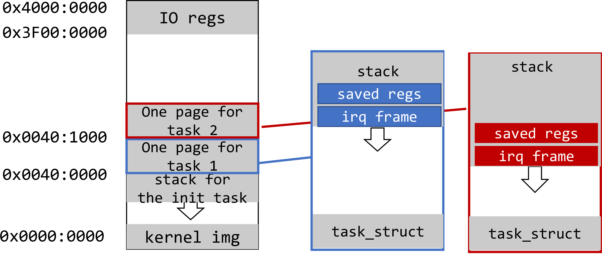
Scheduling out task 2
The kernel calls schedule(). It observes that all tasks have their counters set to 0 and set counters to their tasks priorities.
schedule selects init task to run. (This is because all tasks now have their counters set to 1 and init task is the first in the list). But actually, it would be fully legal for schedule to select task 1 or task 2 at this point, because their counters has equal values. We are more interested in the case when task 1 is selected so let's now assume that this is what had happened.
Switching to task 1, exiting from the 1st irq
cpu_switch_tois called and it restores previously saved callee-saved registers from task 1cpu_context. Link register now points to the instruction right aftercpu_switch_to, which was called last time when task 1 was executed.sppoints to the bottom of task 1 interrupt stack. This is because task 1 finished handling the previous interrupt handler.- From
cpu_switch_to, task1 returns back toswitch_to, to_schedule, and then totimer_tick. There, it disables interrupts and finally executeskernel_exit. There, task 1 irq frame (including the save regs) is unwound.
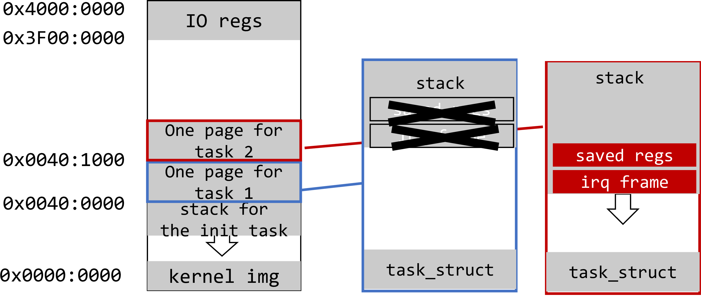
Task 1 resumes normal execution
kernel_exit restores all general purpose registers as well as elr_el1 and spsr_el1. elr_el1 now points somewhere in the middle of the process function. sp points to the bottom of task 1 stack. (Note: the remaining task size depends on the size of local variables in process )
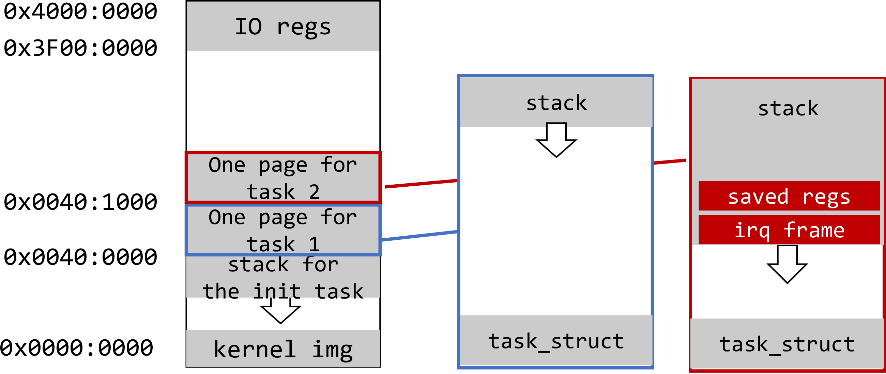
Finally, kernel_exit executes eret instruction which uses elr_el1 register to jump back to process function. Task 1 resumes it normal execution!
Aside: An alternative design
-
When an interrupt happens, the CPU saves irq stack frame automatically on the stack of the current task, e.g. A. This is the same as the design above.
-
The kernel copies the auto saved register contents from the irq frame to the current task's
task_struct, representing the CPU context when this task was interrupted by irq. - The kernel calls its scheduler and returns from the irq (possibly to a different task). The irq stack on the A's stack is then unwound. Now irq is on. Later, when A is scheduled in, the kernel restores its CPU context from A's
task_struct.
Can you implement the alternative design?
Disable preemption
The kernel needs mechanism to (temporarily) disable preemption.
Example: in creating a new task_struct, we do not want rescheduling to happen. Otherwise the scheduler may see an incomplete task_struct. In other words, the creation of task_struct should be atomic.
To disable preemption, one method is to disable interrupts. Beyond that, the kernel also needs fine-grained control.
Per-task preempt_count
To task_struct, we add:
struct task_struct {
struct cpu_context cpu_context;
long state;
long counter;
long priority;
long preempt_count; // new addition
};
preempt_count >0 indicates that right now the current task is non-preemptable. The following two functions operate on it:
void preempt_disable(void) { current->preempt_count++;}
void preempt_enable(void) { current->preempt_count--;}
Seeing this flag, the kernel will not invoke scheduler() at all, let alone descheduling this task (i.e. switching to a different task). This is done via the following code.
void timer_tick() {
if (current->counter>0 || current->preempt_count >0)
return;
...
Why a count instead of a binary flag? This again mimics the Linux implementation. Individual kernel functions could increment & decrement preempt_count. If all kernel functions have finished decrementing preempt_count, the count drops to zero and the scheduler is free to deschedule the task. This mechanism is called reference count, which is common in system software.
preempt_countdoes not prevent a task from shooting in its own foot, though. For instance, a misbehaving task calling schedule() whenpreempt_count> 0 will likely corrupt kernel data structures. Try it out!
Creating a task_struct atomically
Going back to making copy_process atomic:
int copy_process(unsigned long fn, unsigned long arg)
{
preempt_disable(); /* new addition */
struct task_struct *p;
p = (struct task_struct *) get_free_page();
if (!p)
return 1;
p->priority = current->priority;
p->state = TASK_RUNNING;
p->counter = p->priority;
p->preempt_count = 1; // new addition
p->cpu_context.x19 = fn;
p->cpu_context.x20 = arg;
p->cpu_context.pc = (unsigned long)ret_from_fork;
p->cpu_context.sp = (unsigned long)p + THREAD_SIZE;
int pid = nr_tasks++;
task[pid] = p;
preempt_enable(); /* new addition */
return 0;
}
preempt_count is set to 1, preventing the new task, once it starts to execute, from being preempted until it completes some initialization work. After that, the new task executes ret_from_fork, which calls schedule_tail() which will call preempt_enable()
// entry.S
.globl ret_from_fork
ret_from_fork:
bl schedule_tail
...
Making the scheduling algorithm atomic
The scheduler is non-reentrant. Making it atomic looks easy: we just call preempt_disable/enable() upon entering/leaving the scheduler.
void _schedule(void)
{
preempt_disable(); /* new addition */
int next,c;
struct task_struct * p;
while (1) {
c = -1;
next = 0;
for (int i = 0; i < NR_TASKS; i++){
p = task[i];
if (p && p->state == TASK_RUNNING && p->counter > c) {
c = p->counter;
next = i;
}
}
if (c) {
break;
}
for (int i = 0; i < NR_TASKS; i++) {
p = task[i];
if (p) {
p->counter = (p->counter >> 1) + p->priority;
}
}
}
switch_to(task[next]);
preempt_enable(); /* new addition */
}
Why does the kernel disable preemption, instead of disabling all interrupts?
By design, if no TASK_RUNNING tasks are there, the scheduler will run its while loop over and over again until some of the tasks will move to TASK_RUNNING state. But if we are running on a single CPU, how then a task state can change while this loop is running? The answer is that if some task is waiting for an interrupt, this interrupt can happen while schedule function is executed and interrupt handler can change the state of the task.
This actually explains why interrupts must be enabled during schedule execution. This also demonstrates an important distinction between disabling interrupts and disabling preemption. schedule disables preemption for the duration of the whole function. This ensures that nested schedule will not be called while we are in the middle of the original function execution. However, interrupts can legally happen during schedule function execution.
Note: our kernel does not (yet) have the mechanism for tasks to wait for interrupts. It's a important mechanism to be added.
I am not very satisfied with leaving interrupt on during schedule(). There shall be an idle task which does
WFIwhen no other tasks are runnable. In that way, the scheduler can avoid spinning and can run with interrupt off. To implement the idle task, the kernel shall implement task wait state.
Conclusion
We are done with scheduling, but right now our kernel can manage only kernel threads: they are executed at EL1 and can directly access any kernel functions or data. In the next 2 lessons we are going fix this and introduce system calls and virtual memory.